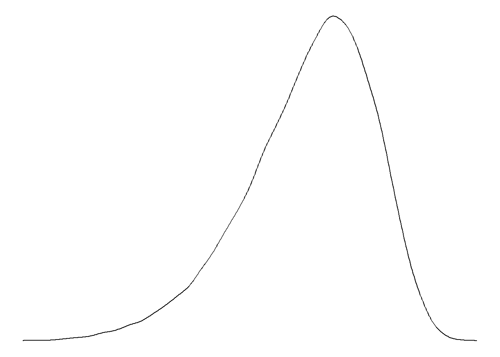
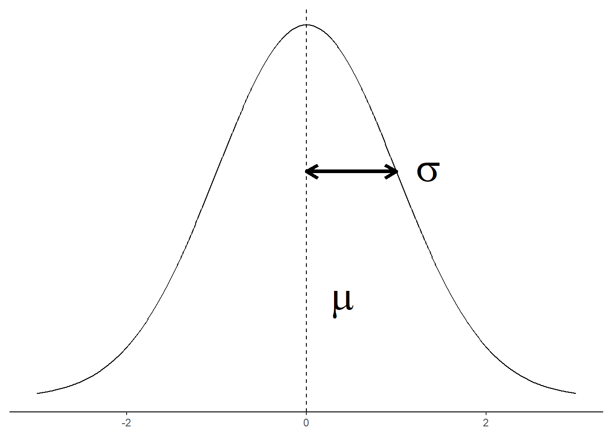

Unit 2 Concepts Reading: Univariate Distributions
What’s on this page?
The overall goal of this reading is to continue the journey of exploratory data analysis by looking more deeply at univariate distributions and analysis, including important theoretical concepts like the Central Limit Theorem.
I will call attention to key terminology with margin notes. I will also ramble about side thoughts in margin notes as well. Sometimes the margin notes will be numbered,1 like footnotes that connect to a specific part of the main text. Sometimes they’re unnumbered, just hanging out whenever you feel like reading them.
1 This is a numbered side-note.
This is a margin note.
Interspersed in the text below are some Knowledge Checks for quizzing yourself. I encourage you to attempt to answer these as you encounter them, to help force yourself to process and understand the material more thorougly. After working through this entire page, make sure you answer these questions in the Unit 2 Knowledge Check Quiz on ELMS. I recommend writing your answers down in notes as you work through this page, and then just referring to your notes to review and provide answers when you take the quiz on ELMS. This is built-in way for you to review the material as you go.
If you have questions, reach out on the course Discord, and/or come to an Open Discussion Zoom session.
Happy reading!
Taking EDA further
To recap a bit, we ended up last unit beginning the process of exploratory data analyis (EDA) by examining some basic aspects of variables in a data frame. For categorical variables (including ordinal and nominal variables), we wanted to get a tabulation of counts of the different values, and for numerical values (continuous or interval variables in particular), we wanted to get some numerical summaries like the range (min/max) and and central (mean/median) vales.
But recall that the overall goals of EDA are to check and challenge assumptions and expectations. That is, we want to make sure that there isn’t anything wrong with the data by confirming some basic assumptions, but we also want to look for surprising results that we may not have expected, because that may shape our analysis to come.
In order to sharpen what we mean by “assumptions”, “expectations,” and “surprise”, we need to dive more deeply into univariate analysis2 and flesh out the statistical concepts behind univariate distributions.
2 Univariate: referring to a single variable at a time.
Models and parameters
First, let’s step back a bit. One of the biggest challenges of any science is to discuss phenomena, data, and patterns at the right level of complexity or specificity. Think about medical science. Technically, every human body is unique in at least some ways. Even identical twins – the closest nature gets to making “clones” – are slightly different. So if we gather data about a single body, how can we know that what we learn will apply to the next body we examine? Or even more basic, if chemists are able to isolate a molecule of water and verify that it is made up of two hydrogen atoms bonded with an oxygen atom, how do we know that other water molecules have the same make-up?
One way of answering this epistemological challenge is through the concept of models. A model is just a simplified way of looking at the world. We constantly construct mental models (consciously and unconsciously) to help ourselved navigate the world, because at the end of the day, the world is just too complex to understand at the finest levels of detail, and we need models to help us approach things in a more manageable way.
In statistics, the term model is used in a few different ways, but it always has this core meaning: a simplified expression of some underlying process that we are trying to describe or analyze. When we talk about assumptions in statistics, what we usually mean is that we are assuming a particular model, and that model is designed to capture certain properties or patterns. In other words, because a model is a simplification, applying a model to a process means that you are (implicitly or explicitly) making a bunch of assumptions about what the data from that process looks like.
If this all feels a little too out there and abstract, read ahead for some more concrete examples, but then come back to try to wrap your head around what I’m saying here.
3 There are also nonparametric statistics, but we will only touch on those at the end of the course. They represent methods for analyzing data when we have so much uncertainty that we think that assuming a model with any parameters may be not cautious enough. However, you can still think about these methods as having some kind of underlying model in the broad sense. They just tend to make fewer assumptions than parametric models. Not making assumptions sounds good, but the trade-off is that it tends to make your analysis weaker. But again, mentally bookmark this for a later discussion.
The other abstract concept we need to wrap our heads around is the concept of a parameter. Most statistical models have something like “settings,” where if we tweak the settings of the model, it can describe different patterns. The technical term for one of these “settings” is a parameter.3
Univariate distributions
This is all very abstract so far. In order to make this a little less abstract, let’s talk about a real-world process, and how we can construct a model for it.
Let’s talk about rolling dice.
Rolling dice: a generating process
One useful way to think about your data is to think about the generating process of that data. Where did the data come from? What determines the values?
Note that a generating process is not the same as the data collection process, though the latter might affect the former. The data collection process is a description of how the data was obtained or recorded. For example, did you call people to ask their opinion on who they will vote for? How did you pick whom to call? Did you make decisions about throwing out some data (for example, if someone gave nonsensical answers)?
In contrast, the data generating process is more of a theoretical concept of all of the underlying factors that gave rise to the value that was observed. This could include aspects of data collection, especially if the data collection method introduced any bias, but it is often about unobservable things. For example, what makes a person decide who to vote for? What makes a person decide what to say when someone asks them who they plan to vote for? These are the kinds of things that might be part of the underlying (and unobservable) generating process behind people’s responses to that kind of poll.
One of the simplest generating processes to think about is flipping a coin or rolling a die, because it’s something we can do physically. So imagine the following process:
- roll a single six-sided (cube) die
- write down the number on a slip of paper
- put that slip of paper in a bag
- repeat steps 1 through 3 many, many times
The result is that you have a bag full of numbers, generated by a process.
Process, population, and sample
Now we can think about how this analogy fits with the kinds of data we are actually interested in. The three important concepts here are :
- the generating process,
- the population of data that exists (or could exist) in the world, and
- the sample of data that we actually observe.
In our simple dice scenario, rolling the die is the generating process, all of the numbers in the bag are the population, and any numbers we pull out of the bag to examine are the sample.
Whenever we collect data, we are taking a sample. Imagine that the world is a huge bag of numbers and any time we make observations or try to analyze some data, we can only pull a few of those numbers from the bag. For example, if we are interested in the average height of 3-year-old males (perhaps because we want to know if our 3-year-old son is on track, growth-wise), the population (like the entire bag) might be all of the 3-year-old males in the world4, and clearly getting all of that data is not feasible, or even necessary. But we have to collect some data in order to have some idea, so we collect a sample. It might be a large sample or a small sample, but it’s still a sample.
4 Now think to yourself, “would I really want to compare my kid to all the kids in the world, if I just want to know that he’s on track?” To make this a bit more concrete, imagine you’re from Peru (a country with some of the shortest people on average), would you want to compare your child to the population of children from the Netherlands (a country with some of the tallest people on average)? Thinking carefully about where your sample of data comes from, and what your theoretical population might be are important considerations!
How you get your sample is of course really important. Consider how political polls are done. Pollsters collect data by talking to just a sample of people, and then using that data to make guesses about how the entire voting population might vote in an actual election. But not all samples are the same! Asking the first ten people you see in a fancy restaurant in Chevy Chase is different than asking the first ten people you see sleeping in tents in downtown DC. These are all valid data (assuming all of those people are eligible to vote), but they are very different samples, and they may not give you a good picture of the overall pattern in the population that you are trying to draw conclusions about.
Back to the dice analogy, virtually any actual data collection is like pulling a set of numbers from the bag. If you are somehow in a position to be able to get every number in the bag, you might be able to get the entire population.5 But at the end of the day, what we are really interested in is constructing a model of the generating process itself. How did the pattern of numbers get to be that way?
5 One more analogy to think about sample vs. population. Let’s say you decide you would like to know how all of your friends intend to vote. You could feasibly ask every single one of your friends, and maybe even trust their responses. This would be a case where your sample is the same as the entire population you care about. But if you then wanted to predict who would win in the actual general election, now you’re trying to predict for a different population, so you’re back to only having a (likely very biased) sample. The point here is that in most cases, if we are able to collect data from an entire population, we rarely care all that much about making claims about that specific group.
Theoretical vs. empirical distributions
So let’s think about rolling a die. There are six sides, so as long as the die is fair, we have an equal chance of getting a 1, 2, 3, 4, 5, or 6, every time we roll the die. So if we pull 600 numbers from our bag of numbers, we might expect to see 100 occurrences of each number, right? But what if we didn’t?
Think about if we roll the die just 6 times. What do you think the chances are that we would see exactly 1 occurence of each number?
You can try this yourself!
The fact is, there are many, many possible ways for lots of die rolls to go, even if the die is fair. If you need to convince yourself, you can try it, and start rolling sequences of 6 rolls at a time, and look at how many different sequences you get. Getting exactly one of each number is actually not all that likely!
In other words, our sample is rarely a perfect reflection of the underlying process, even when that process is simple. This is where we come to the concept of empirical vs. theoretical distributions.
First, a distribution is just the term we use to talk about what values are more or less likely or common. So when we look at the numbers we pull from the bag and see how many we have of each, that’s examining the distribution of values. A theoretical distribution is the distribution we expect from a particular mathematical model. So if our model is “each side of the die is equally likely,” then our theoretical distribution if we looked at a sample of 600 numbers would be 100 of each number. In contrast, the numbers we actually observe are the empirical distribution.
In other words, the theoretical distribution describes the generating process6, and the empirical distribution describes our data sample.
6 And since the population we care about is generally hypothetical anyway, we use the theoretical distribution to reason about the population.
Both of these are important when we are doing EDA. We want to examine the empirical distribution, because we want to see what the pattern is for the data we actually have. But then we want to think about how those data compare to theoretical distributions, because we want to check our assumptions of the underlying generating processes of the data.
The Uniform distribution
Fortunately for us, statisticians have developed a wide range of different mathematical models to capture different theoretical distributions. So our task is often a matter of choosing the distribution that best fits our data.
One of the simplest distributions is called the uniform distribution. Conceptually, this is a good choice for our dice example7, because the idea is that any value in a uniform distribution has an equal chance of being generated (i.e., the chance of any particular value being generated is “uniform”).
7 Now technically, this isn’t quite accurate because the true uniform distribution is a distribution over continuous numbers, and the six values of a die are not (technically) continuous. But it’s a good enough approximation to help us build a better intuition of how the uniform distribution works.
8 We will actually go through the process of visualizing this in an upcoming Code Tutorial.
The uniform distribution is also often called a “flat” distribution, because when we visualize it, it looks flat because all of the values have the same chance of occurring.8
So now we have a model of the generating process: the results we get from rolling a die are like the results we get from a uniform distribution. But when we talked about models above, we said that models have parameters, like settings. So what are the parameters of the uniform distribution? Take a minute to think about it: if we have a model that says “all values are equally likely”, what’s the minimum information we need in order to generate numbers that look like rolls from a single die?
The answer is simply the range. In other words, the uniform distribution only needs to know what values to pick from, defined by the upper and lower limits. This means that the uniform distribution just has two parameters: the minimum value that can be selected, and the maximum value that can be selected. The rest of the math behind the uniform distribution is the part that selects any (continuous) value between that minimum and maximum at an equal probability.9
9 Again, our dice analogy isn’t quite exact here. For a true continous uniform distribution, all you need to know are the minimum and maximum. For a distribution like a fair die, all you need to know are the possible numbers (1 through 6). This is essentially the same concept, I’m just pointing out that it isn’t precisely the same.
Knowledge Checks
Let’s pause to review by answering some Knowledge Checks.
- What does univariate mean?
- Describe the relationship between a model and its parameters. What happens if you change parameter values?
- What are the parameters of a uniform distribution?
- For each of the following, identify whether it is an example of a) a generating process, b) a population, or c) a sample of data:
- the genetic and environmental factors that contribute to determining a person’s adult height
- a set of height measurements taken from a particular group of people
- the set of all height measurements for a particular group of people
- all of the movie ratings currently recorded on IMDB
- hypothetical set of all movie ratings from past, present, or future
- the steps that lead up to a person picking a specific rating
Beyond the Uniform: the Normal distribution
This is fine if our generating processes are all as simple as a die roll, but what about the real world? Most interesting processes are the result of many different factors, combining in many different ways, resulting in more complex distributions. In other words, many observed variables (that is, data we actually collect) may in fact be the result of the combination of many underlying or latent10 variables.
10 unobserved, possibly unobservable
Fortunately, we have a mathematical rationale that explains why many cases of observed data follow something called the normal distribution.
Note that when we talk about distributions, the word “normal” doesn’t have the meaning of “common, typical.” It’s a technical term to describe a specific family of theoretical distributions. It’s a little confusing because the normal distribution is also very common! Just keep in mind that when we’re talking about distributions, the word “normal” is a technical term.
Central Limit Theorem
The rationale for why the normal distribution is so common is based on a very powerful and useful mathematical concept called the Central Limit Theorem (CLT). We will skip the math (though the math is very interesting, if you’re a math person!) and jump to the core of the concept.
What the theorem says is that when many different (and independent)11 processes combine (average or sum together), the distribution of that average (or sum) tends to follow a distribution called the normal distribution.12 A simple example of this is that as we’ve seen, the distribution from a single die is uniform. But if we roll many dice at once, and take the average (or sum) of those dice, that average will follow a normal distribution.13
11 The idea of independence is a crucial assumption (remember that term?) for the CLT. It essentially means that our generating process doesn’t change depending on the other values we’ve generated. For example, if you were taking a poll of people standing in line, but the next person in line was influenced by the person who just gave a response, those responses would not be independent.
12 Also called the Gaussian distribution.
13 Again, we’ll see this in action in the upcoming Code Tutorial.
That’s it! It’s ultimately a simple concept – though perhaps deceptively simple – but the result is that many of the distributions we end up caring about tend to be normal or close to normal distributions, precisely because things in the real world are very often the product of many independent processes or factors. In other words, the real-world complexity of most data means that the theoretical assumptions of the CLT are often true (or true enough), and so the result is that the normal distribution tends to occur “in the wild” quite a bit.
The shape of the normal
In contrast to the “flat” uniform distribution, the normal distribution is sometimes called a “bell curve” because of its shape. But what does that shape mean, and how does it get the shape? By now, you should be able to formulate at least initial answers for these questions. So think about it for a bit before proceeding. What does the shape of the curve pictured to the right tell us? Why does the shape look like that? In order to make this a bit more concrete, imagine that the x-axis along the bottom of the graph to the right representing some quantity, like the difference between a random 3-year-old child’s height and the height of an average 3-year-old, where the dotted line indicates a difference of zero, values to the left mean that she is shorter than average, and values to the right mean she is taller than average.

What the shape of a distribution means is that it tells us what values are more or less likely to occur than other values. So the “bell curve” that has a peak (“mode”) in the middle that fades to low “tails” in the edges means that values around the peak of the distribution are the most common, and the values at the edges can become exceedingly rare. The precise shape of the distribution gives a precise quantification of “how common” or “how rare.”
In our height example from above, it means that if the heights of 3-year-olds follow a normal distribution, then it’s most likely that a random child would be close to the average (since the average is at the peak), and the farther you get from that average, the more and more unlikely it becomes.14
14 As an exercise, think about how different it would be if children’s heights followed a uniform distribution.
Where the shape comes from is the mathematics of the model, plus the values of its parameters. In other words, the overall pattern of shapes is determined by the theoretical mathematical model, but the specific details of the shape can be altered/adjusted based on its parameters.
The normal distribution only has two parameters:
- The mean:
- the “central” or “average” value
- sometimes symbolized with the Greek letter “mu”: \(\mu\)
- represented by the vertical dotted line in the figure to the right
- The standard deviation:
- how “wide” the distribution is, indicating how much values tend to differ from the mean
- sometimes symbolized with the Greek letter “sigma”: \(\sigma\)
- represented by the length of the arrow in the figure to the right
And that’s it! With just two parameters you can describe the theoretical shape of a normal distribution.
There is also a special case of the normal distribution called the “standard” normal, which is simply a normal distribution with a mean of 0 and a standard deviation of 1. We will return to standard normals throughout the course.
Why is the normal important?
So why do we care so much about the normal distribution?
Remember: the CLT tells us that if a (continuous) variable is the result of the combination (average or sum) of a bunch of different processes, that variable will tend to follow a normal distribution, no matter what the distribution of the component processes are.
And also recall: it is very often that numbers we collect from real-world data can be a combination of many different underyling (and often unknown) processes. For example, think about someone’s score on a standardized test like the SAT. That overall score is the sum of many different factors, including the score on each item, whether the person was well-rested the night before, whether there were unexpected distractions during the testing session, how much time/effort the person spent in preparation, how much effort the person put into years of schooling prior to the test, how much “natural ability” the person may have inherited from their parents, just plain luck, etc. etc. When thinking about any process that resulted in a data value, it’s often easy to imagine many many underlying factors contributing to the final observed value.
Put these ideas together, and you can see why many variables we observe in the real world follow a normal distribution.
And if they are never quite exactly normal, they are often “normal enough” that the normal distribution is a very close approximation. Using a convenient theoretical distribution like the normal distribution can help us simplify the math we use to analyze our data. Back to the concept of a model, when we use models, we simplify real-world complexity to make it more manageable to analyze. The mathematics of the normal distribution have a lot of convenient and useful properties to make analysis easier. Therefore, as long as the normal is a “good enough” match to the distribution of our data, the conclusions we are able to draw from a model that assumes a normal distribution are also “good enough.”15
15 Figuring out what counts as “good enough” is a common challenge and the reason for a great deal of ongoing statistical research.
In short, we use the normal distribution often because it occurs often, and because it is useful for many different analyses. It is also a useful reference point for other distributions that are very similar, like the t distribution, which we will come to later.
Knowledge Checks
Time for a few more review questions:
- What are the parameters of a normal distribution? (i.e., what are they called, and what do they represent?)
- What are the parameter values for a standard normal distribution?
- What’s the difference between an empirical distribution and a theoretical distribution?
- Come up with another example of a related sample, population, and generating process, similar to the sets from Knowledge Check #4 in the previous section.
- Based on the logic of the Central Limit Theorem, which of the follow sets of data might we expect would tend towards a normal distribution?
- Flipping a coin 10 times and counting the number of heads, then repeating this procedure many times.
- The number of Spotify streams for the highest- and lowest-streamed songs for each artist in a random selection of artists.
- Having people throw a dart at a target, getting the average distance from the target with each throw, and gathering these averages from a random set of people.
- The individual voting choices for a particular election from a random selection of voters.
- The weight measurements over time from a person participating in a weight loss program.
- The average Yelp ratings from a randomly-selected group of restaurants.
- Think of two more example data sets: one that you would expect to be normally distributed (based on the Central Limit Theorem), and one that you wouldn’t.
Modes, skew, and tails
When we discuss distributions, usually the best tool is a visualization16, but sometimes we also use words to describe different aspects of a distributional shape.
16 Which we will do soon!
17 The median value in a normal distribution also happens to be at the same value.
The mode of a distribution is just a word for the “high point” of the distribution, which indicates the (theoretically) most likely value. The uniform distribution doesn’t really have a mode (or alternatively, the “mode” is the entire range of the distribution), because it’s theoretically flat. The normal distribution’s mode is exactly at the same point as the mean.17
Many distributions have a portion of the shape that fades into very low probability, like the outer ends of the normal distribution. These are referred to as the “tails” of a distribution. The tails of many distributions (including the normal) never quite reach zero, but just get closer and closer.
Some distributions (including the normal) are symmetrical, meaning that the upper/lower ends (left/right sides in typical visualizations) are mirror images of each other, in theory. If a distribution looks “tilted” one way or another, we talk about it being “skewed.” The direction of the skew (“left-skewed” or “right-skewed”) just describes the side where the longest “tail” is. So if you have a distribution that looks sort of like a normal, but it looks like it’s leaning a bit to the right, with a long left tail, you might say that it’s “left-skewed”, or “skewed to the left.”
There are technical ways to compute and describe skew and other properties like kurtosis – how “fat” or “skinny” the “bell” part of the curve is, compared to a normal. But we won’t go into those because for most purposes, visual plotting of distributions is far more informative than statistical summaries of skew, kurtosis, etc.
Next steps
With these concepts out of the way, you should go on to the Code Tutorial on univariate distributions, to see how these things work in action with a sample data set.